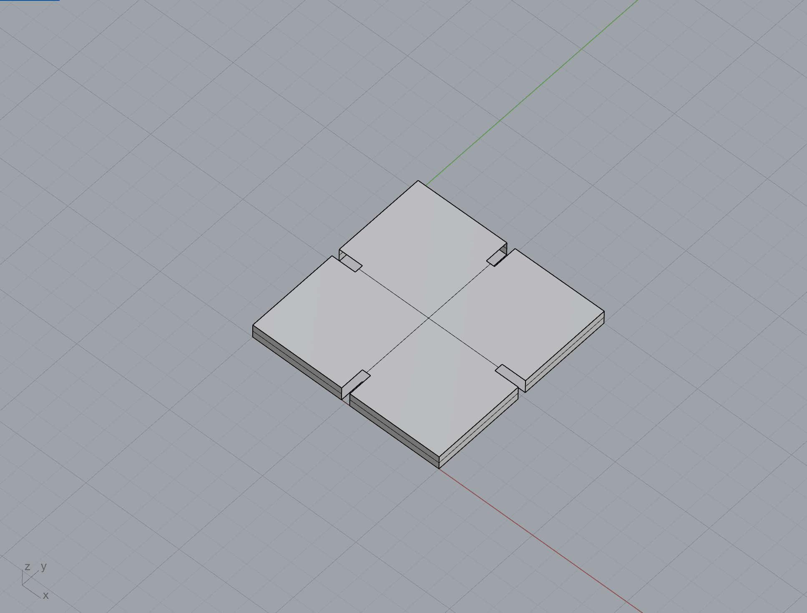
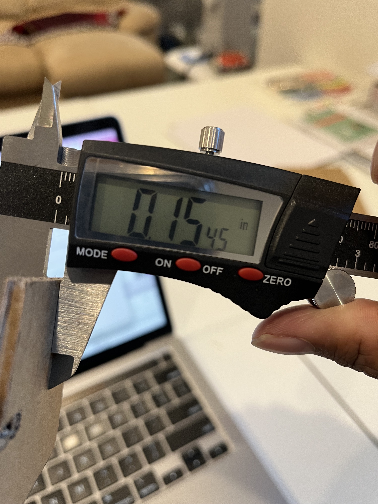
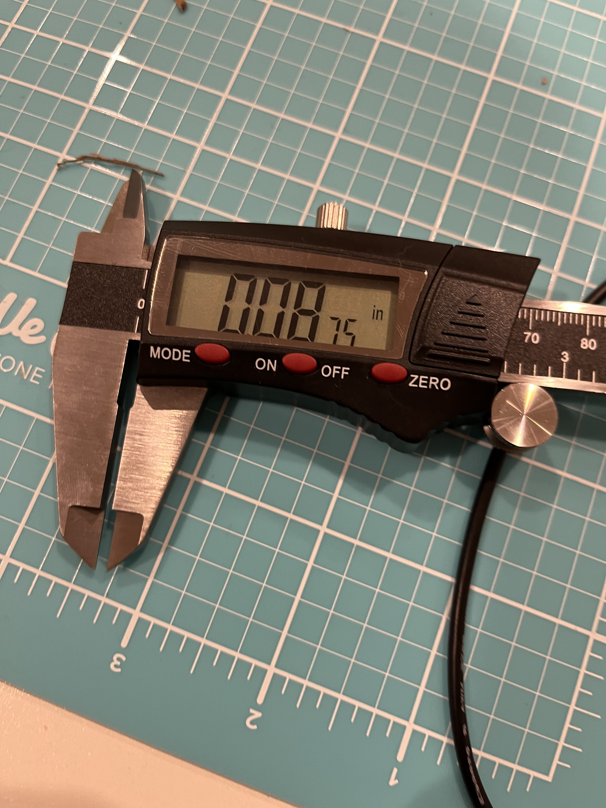
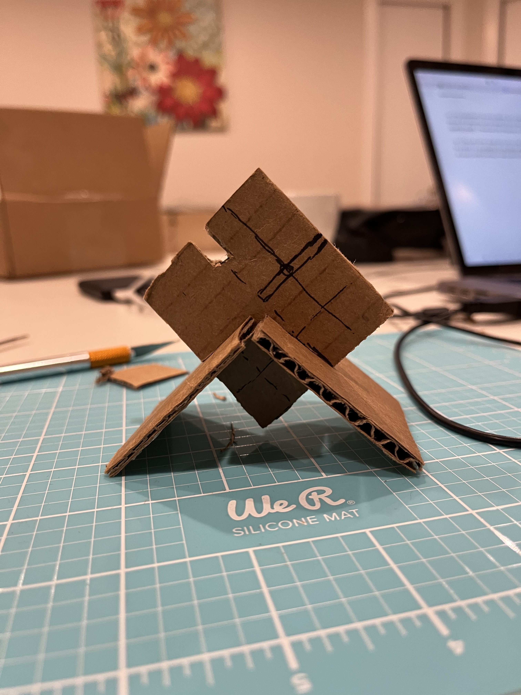
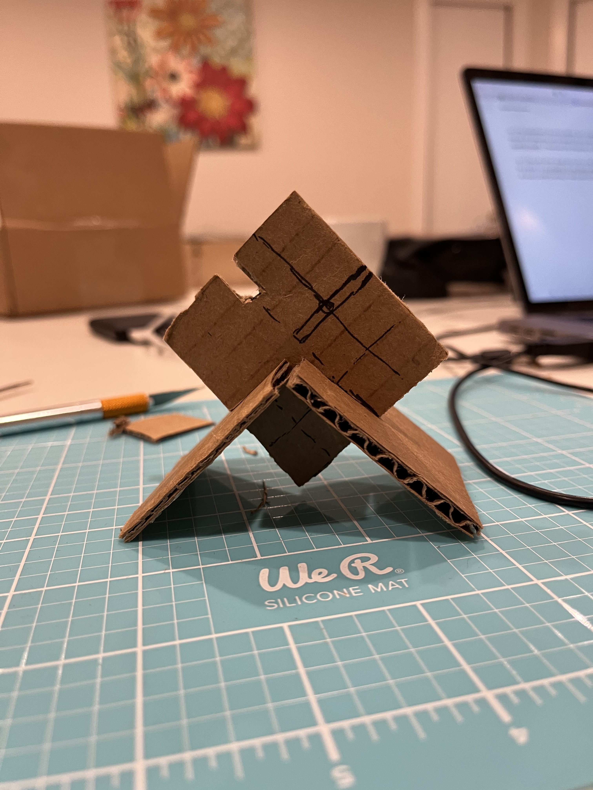
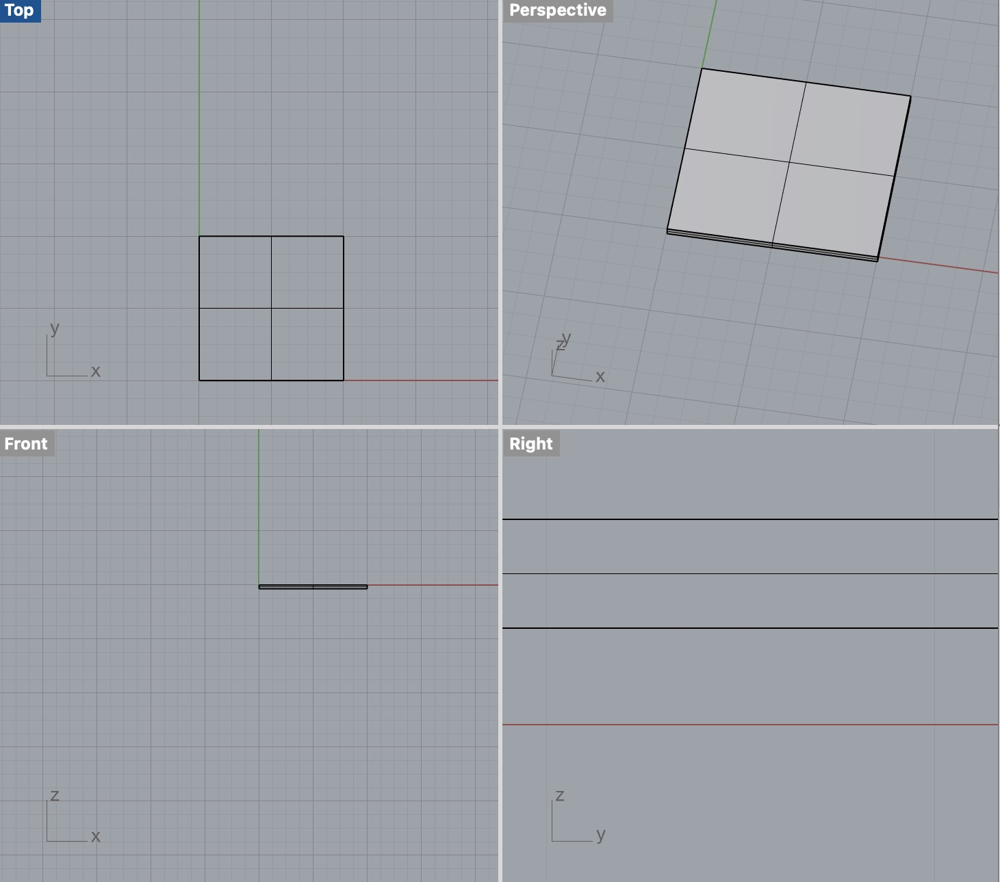
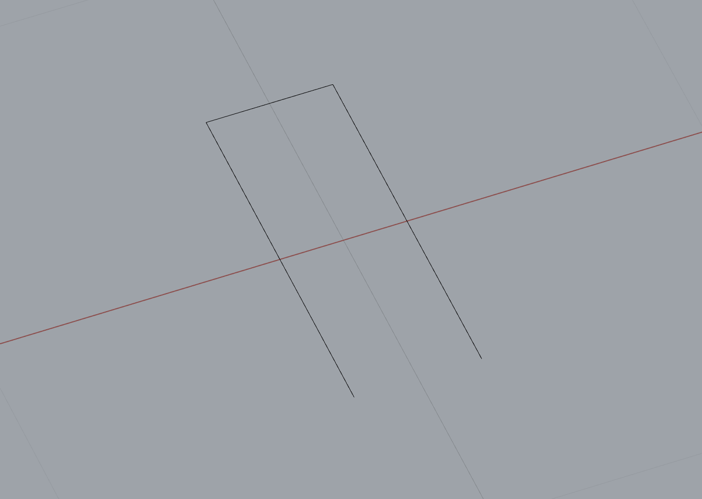

A1: Modelling and Laser Cutting!

I started off measuring some cardboard that was lying. Using the calipers I recently bought, I measured the thickness at around 0.1545 inches. And I decided that having each of the pieces be 2 inches by 2 inches would suffice.

I then did some rough test cuts to see what would theoretically be a good cut to properly fit two pieces together. The cuts I did measure at around 0.0875 inches in width and 0.25 inches in length.
  

Using the measurements from the 2inches by 2inches cuts of cardboard. I went into Rhino and created my model

I used a polygon that measured at Length: 0.25 inches and 0.09 inches in width (Rhino rounded it up for some reason). This acted as the slit that would fit the pieces together.

Using the trim tool, I used the polygon to cut pieces out of the model that would act as my slits to fit my pieces together.